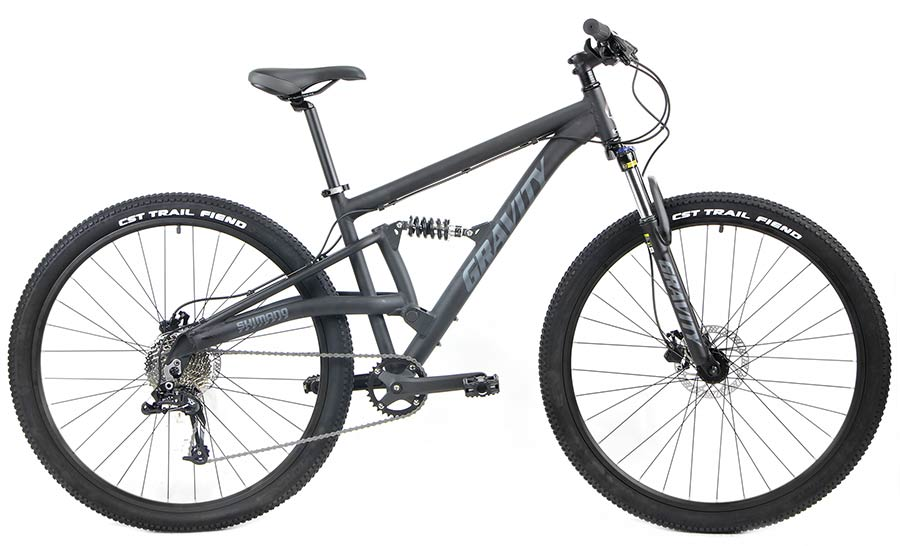
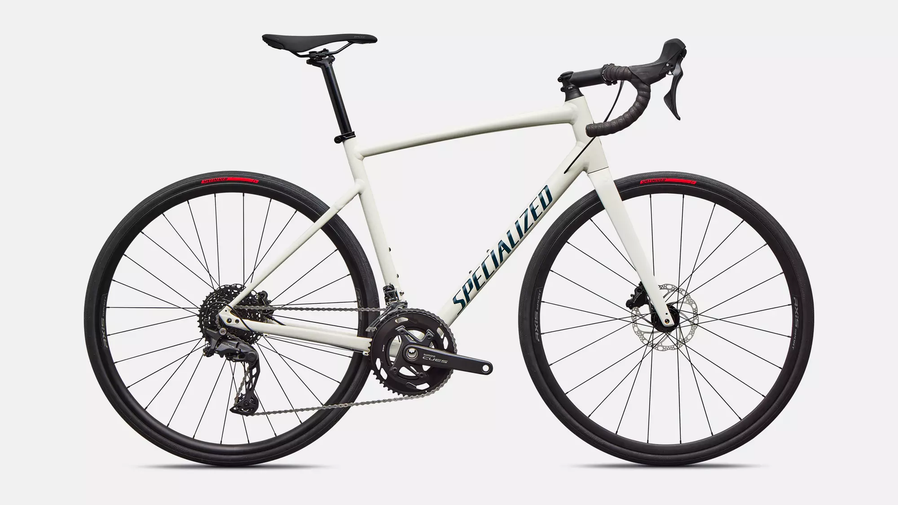
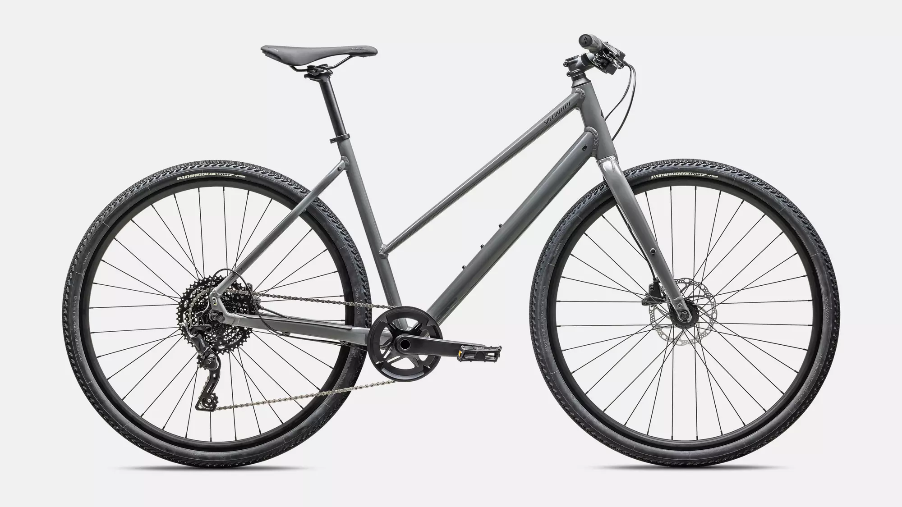

Local bike shop carrying road, mountain, and commuter bikes, with a service bay that can true a wheel while you wait.
In stock now, ready to roll out the door.

Mountain, full suspension
$1,899.00

Road, carbon frame
$2,450.00

Commuter, step-through
$899.00
Roll in for a free brake and gear check on any bike, used or new. Our service bay handles flats, tune-ups, and full rebuilds.